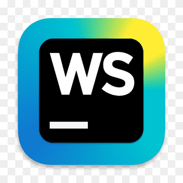

Топ-5 редакторов кода для верстальщика
Самые популярные редакторы кода — Visual Studio Code, Sublime Text, Atom и WebStorm. Они ускоряют разработку и помогают быстро находить ошибки, работать с Git и получать удовольствие от процесса.
Atom

Редактор был создан командой GitHub Inc. Atom приятный на вид, кроссплатформенный бесплатный редактор. Имеет встроенную интеграцию с Git и GitHub.
В конце 2022 года производители решили больше не развивать продукт и не выпускать обновлений для редактора. Пока ещё есть возможность пользоваться старой версией, если очень нравится функционал программы.
Скачать с официального сайта можно здесь.
Visual Studio Code

Бесплатный кроссплатформенный редактор компании Microsoft. Является одним из самых популярных редакторов на данный момент. Скачать можно здесь.
В базовой версии есть интеграция с Git и режим отладки кода. Поддерживает, в том числе и через дополнения, большое количество языков.
WebStorm
Продукты JetBrains являются полноценными интегрированными средами для разработки. При минимальной настройке редакторы обладают большим количеством возможностей, на изучение которых нужно время. Базово имеет интеграцию с системами контроля версий, есть отладчик кода, статически анализирует содержимое проекта и в случае ошибок указывает на них.
Продукт платный и доступен к использованию по подписке, установить и оформить подписку можно здесь. Каждый из продуктов отвечает за определённую сферу. WebStorm, к примеру, больше подходит для фронтенд-разработки, а PHPStorm — для написания серверного кода на языке PHP.
Sublime Text4

Sublime Text — это легковесный кроссформенный текстовый редактор.
Программа имеет встроенную поддержку TypeScript, JSX и TSX, современный пользовательский интерфейс, возможность использовать видеокарту для рендеринга, благодаря чему повышается производительность редактора.
Скачать редактор с официального сайта можно здесь.
Источник: https://htmlacademy.ru/blog/js/editors-for-the-coders